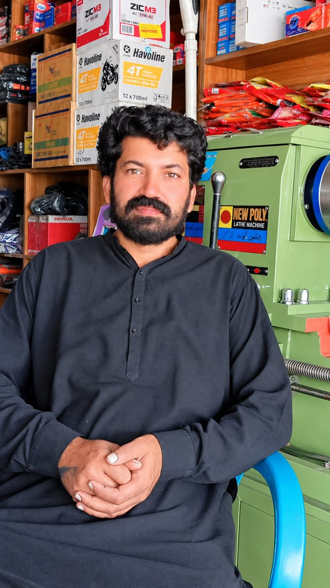
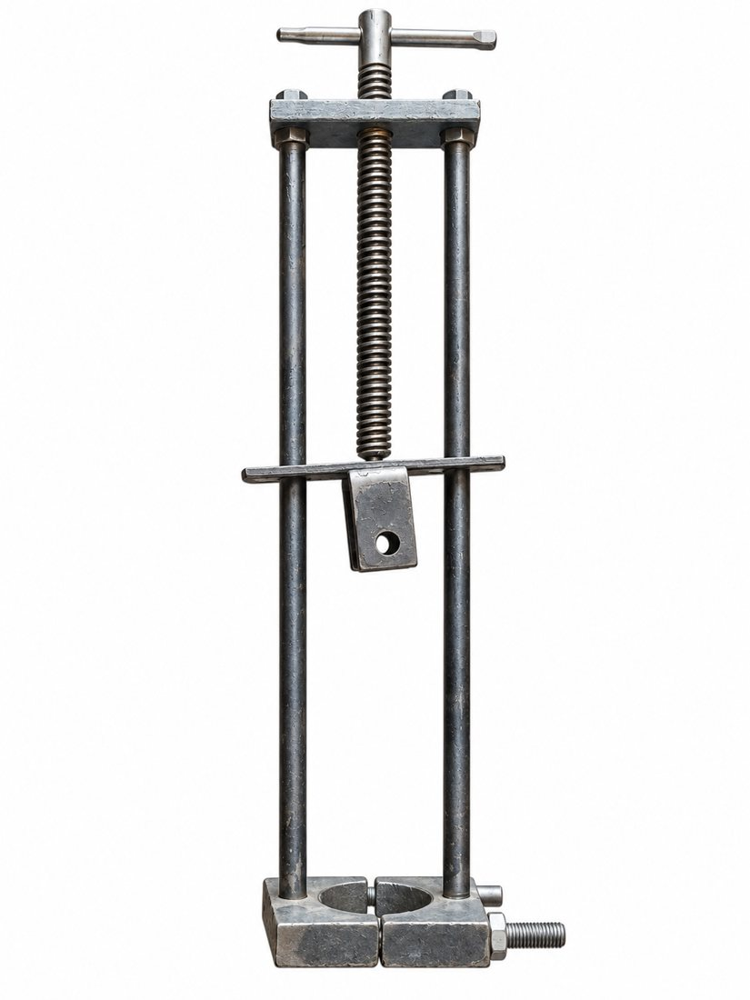
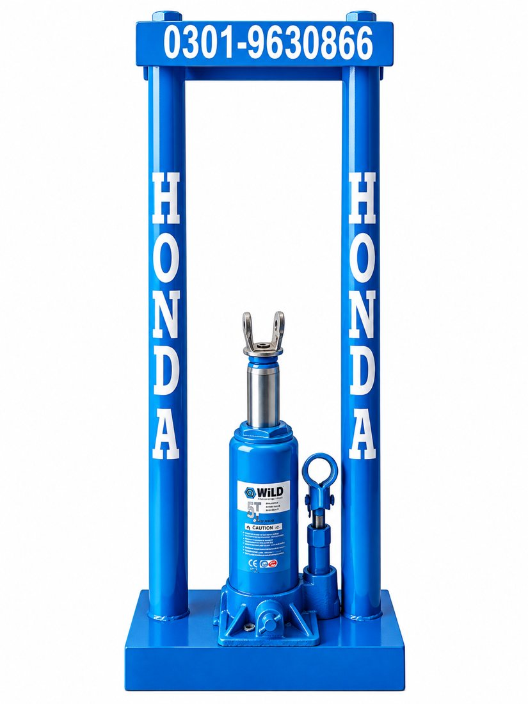

ریئر لیف اسپرنگ (شاخ) کھولیں صرف 2 سے 3 منٹ میں۔ لاہور، پاکستان کے ناصر عباس کا بنایا ہوا جدید آٹو ٹول۔
Rear Leaf Spring Auto Clamp, made in Lahore, Pakistan.
ریئر شاخ آٹو شکنجہ ریئر لیف اسپرنگ (شاخ) کھولنے کا خودکار ٹول ہے۔ یہ پرانے ریئر شاخ مینول شکنجے کا بہتر اور آسان ورژن ہے۔ ایک ہی شخص بغیر تھکن اور چوٹ کے ڈر کے کام کر لیتا ہے۔
ناصر عباس (عمر 38 سال)، لاہور، پاکستان۔ ان کے مطابق پاکستان میں پہلی مرتبہ اس نوعیت کا جدید اور ہائی کوالٹی ٹول انہوں نے ہی بنایا ہے۔

ناصر عباس، ریئر شاخ آٹو شکنجہ کے بنانے والے، لاہور۔
نیا ورژن 23 ستمبر 2026 کو لانچ ہوا اور مکینک کمیونٹی میں بہت سراہا گیا۔


| پرانا مینول شکنجہ | نیا آٹو شکنجہ | |
|---|---|---|
| کام کا طریقہ | ہاتھ سے کھینچنا | آٹو |
| وقت (ایک شاخ) | 30 سے 35 منٹ | 2 سے 3 منٹ |
| کتنے بندے | ایک، کبھی دو | ایک شخص |
| تھکن / چوٹ | ہاتھ درد، تھکن، زخمی ہونے کا خطرہ | نہ تھکن، نہ چوٹ |
| قیمت (تقریباً) | 2500 روپے | 7000 روپے |
| وزن | تقریباً 1 کلو | 7 سے 8 کلو |
قیمت اور وزن زیادہ کیوں؟
اچھی کوالٹی کی وجہ سے نئے ٹول کا ریٹ اور وزن زیادہ ہے۔ سستا رکھنے کے لیے سیفٹی پر کوئی سمجھوتا نہیں کیا گیا۔
ان ویڈیوز میں پرانے اور نئے ٹول کے فرق کی تفصیل بیان کی گئی ہے۔
ریئر لیف اسپرنگ (شاخ) کھولنے کا جدید آٹو ٹول، جس سے ایک شاخ 2 سے 3 منٹ میں کھل جاتی ہے۔
لاہور، پاکستان کے ناصر عباس نے۔
23 ستمبر 2026 کو۔
تقریباً 7000 روپے۔ پرانے مینول شکنجے کی قیمت تقریباً 2500 روپے تھی۔
7 سے 8 کلو، جبکہ پرانے کا وزن تقریباً 1 کلو تھا۔
3 سے 4 دن پہلے۔ آرڈر کے لیے واٹس ایپ پر رابطہ کریں۔
آرڈر 3 سے 4 دن پہلے بُک کروانا ہوتا ہے۔ واٹس ایپ پر میسج کریں یا کال کریں۔
ناصر عباس، لاہور، پاکستان
0301 5810712